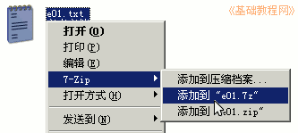
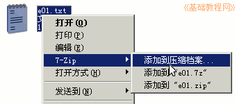
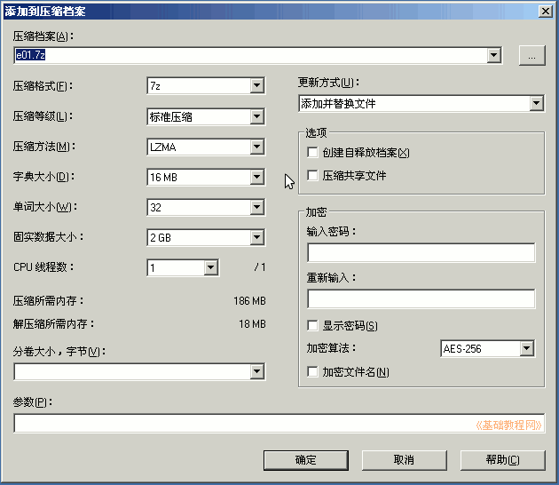
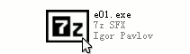
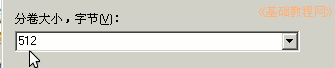
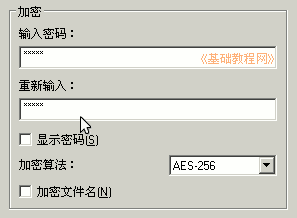

7-Zip 压缩软件基础
作者：TeliuTe 来源：基础教程网
文件压缩后可以减小体积，便于发送和携带，下面我们来看一个练习；
1、直接压缩
1）瞄准要压缩的文件，点右键选“添加到 文件名.7z”；

这时就会把该文件压缩到当前文件夹中，一般是放在最后头了；
2、“极限”压缩
1）瞄准要压缩的文件，点右键选“添加到压缩档案...”；

2）这时就会出现一个压缩的对话框，上面是压缩文件名，中间是各个选项；；

3）在这里可以把压缩文件名改一下，还可以把压缩等级设为“极限压缩”，这样压缩后文件会更小些；
3、自释放档案
1）在“添加到压缩档案”对话框右边，打勾“创建自释放档案”，可以生成可执行文件；
这样压缩后的文件是一个可执行文件，即使对方没有压缩文件也可以解压；

4、分卷压缩
1）如果一个文件太大，可以分割成几个小的压缩包，在上面的对话框下面，输入分卷大小；

2）注意 1K=1024 字节、 1M=1024k 、1G=1024M，字节是一个很小的单位；
5、加密压缩
1）在对话框的右边，可以设定解压密码，这样解压的时候需要输入密码；

8）密码输入两遍，显示的是星号，打勾显示密码，可以看到密码；
本节学习了压缩文件的基本方法，如果你成功地完成了练习，请继续学习下一课内容；
本教程由86团学校TeliuTe制作|著作权所有
基础教程网：http://teliute.org/
美丽的校园……
转载和引用本站内容，请保留版权信息和本站链接。